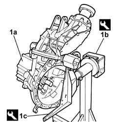
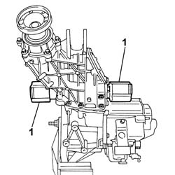
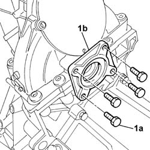
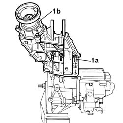
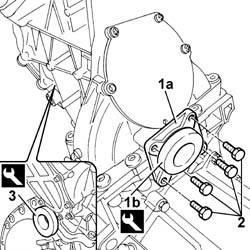

2110E12 REAR DRIVE TRANSFER CASE - R.R. WITH THE GEARBOX DETACHED
- Path
- Procedures > 21 GEARBOX UNIT > 2110 MANUAL GEARBOX WITH DIFFERENTIAL > 2110E TRANSFER CASE FOR REAR TRACTION > 2110E12 REAR DRIVE TRANSFER CASE - R.R. WITH THE GEARBOX DETACHED
- Kind
- repair procedure (removal / refitting; the operation number is the code)
- Applies to
- engines: 1.2 8v; all production periods
- Interactive page
- https://sloeber94.github.io/elrnDB-fPnd/en/#/169001544
Applies to: engines: 1.2 8v; all production periods
 Removing
Removing
 Refitting
Refitting1. Position the gearbox-rear drive idler casing (1a) on the special support stand (1b) securing it to the mounting bracket (1c).
Description | Code | Function | |
|---|---|---|---|
1b | Stand | 1.871.001.014 | Gearbox support |
Description | Code | Function | |
|---|---|---|---|
1c | Bracket | 1.871.001.000 | Gearbox support |

Applies to: engines: 1.2 8v; all production periods
1. Prise up and remove the two differential side joints.

Applies to: engines: 1.2 8v; all production periods
1. Undo the fixing bolts (1a) and remove the oil seal cover (1b).

Applies to: engines: 1.2 8v; all production periods
1. Undo the fixing bolts (1a) and remove the rear drive idler casing (1b).
Remove the remaining oil seal for the differential joint.

Applies to: engines: 1.2 8v; all production periods
Refitting
RemovingRenew the bead of sealant on the gearbox casing in the housing for the rear drive idler casing.
Description | Qty. | Component | Type | Classification | |
|---|---|---|---|---|---|
- | Loctite | - | - | 510 | Sealant |
Place the rear drive idler casing in position and tighten the fixing bolts to torque.
Value daNm | Fastening | Component | Ø | |
|---|---|---|---|---|
- | 7 | Bolt | - | - |
1. Fit a new left side oil seal (1a) using the special fitting tool (1b).
Description | Code | Function | |
|---|---|---|---|
1b | Fitting tool | 1.871.005.900 | Fitting oil seal |
Renew the thread-locking agent on the bolts fixing the oil seal cover.
2. Tighten the bolts fixing the cover to torque.
Value daNm | Fastening | Component | Ø | |
|---|---|---|---|---|
2 | 2.5 | Bolt | - | - |
3. Fit the right side oil seal using the special fitting tool.
Description | Code | Function | |
|---|---|---|---|
3 | Fitting tool | 1.871.005.900 | Fitting oil seal |

Applies to: engines: 1.2 8v; all production periods
Fit the two differential joints in place.
Remove the gearbox-rear drive idler casing assembly from the support stand releasing it from the mounting bracket.
Description | Code | Function | |
|---|---|---|---|
- | Stand | 1.871.001.014 | Gearbox support |
Description | Code | Function | |
|---|---|---|---|
- | Bracket | 1.871.001.000 | Gearbox support |